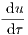
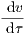
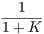
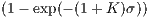
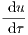
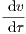
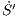
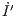
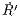

Figure 1: Schematic diagram of the Michaelis-Menten enzyme-substrate reaction.
Problem sheet 3
| Thomas E. Woolley |
| Last edited on: |
December 18, 2017
Enzymes are biological molecules (typically proteins) that significantly speed up the rate of virtually all of the chemical reactions that take place within cells. They are vital for life and serve a wide range of important functions in the body, such as aiding in digestion and metabolism.
In 1913 Leonor Michaelis and Maud Menten proposed a mathematical model of how enzymes work. The process involves an enzyme, E, binding to a substrate, S, to form a complex, C, which in turn releases a product, P, regenerating the original enzyme. This may be represented schematically as (see Figure 1)
|
| (1) |
|
| (2) |
| Ṡ | = -k1(E0 - C)S + k-1C, | (3) |
| Ċ | = k1(E0 - C)S - (k-1 + k2)C. | (4) |
|
| (5) |
to produce the following system
|  | = -u + (u + K - λ)v, | (6) |
| ϵ | = u - (u + K)v. | (7) |
What are ϵ, λ and K? Show that ϵ, λ and K are non-dimensional.
|
| (8) |
| u(σ) | = 1, | ||
| v(σ) | = . | (9) |
This is known as the system on the ‘inner’ time-scale.
In questions 7-6 you have done a multiple scales simplification of the Michaelis-Menton problem. Namely, the whole equation is hard to solve. However, we can solve for what the equation looks like for small time, σ (question 7) and we can solve for what the equations looks like for large time, question (6). In the computation question, which is next, we check these approximations.
Let K = 2, λ = 1 and ϵ = 0.001. Simulate
|  | = -u + (u + K - λ)v, u(0) = 1 | (10) |
| ϵ | = u - (u + K)v v(0) = 0. | (11) |
and
|
| (12) |
with v = u∕(u + K) over the time t ∈ [0,20]. How well do these curves approximate each other?
Spruce budworm (see Figure 2) are preyed upon by spiders, miscellaneous insects, and birds. A model for their population size, N is given by
|
| (13) |
|
| (14) |
Hint: consider low, medium and high values of N.
|
| (15) |
What are the scales of the population and time in terms of A, B, K and R? What are the parameters r, k in terms of A, B, K and R?
You can find more about the spruce budworm population equation and an online applet that allows you to simulate the system quickly and easily at the following website:
|
| (16) |
The above website may aid in the following questions as we are going to consider the steady states of
|
| (17) |
We could solve f(u) = 0, however, this leads to a cubic in u. This can be solved, but it is not very fun. Instead, we are going to consider sketches of the system.
We could sketch f(u), directly, and draw arrows on the diagram, such that u is increasing if f(u) > 0 and u is decreasing if f(u) < 0. This will immediately tell us how many stationary states there are and inform us of their stability. We will do this towards the end of this question, however, going straight into the full sketch may cause us to miss certain cases, as we have two parameters, r and K, to worry about. However, if you feel confident shoot straight to question 3.
Critically, the following questions only deal with sketches. Thus, you do not have to be exactly accurate in your plotted values. We are just need to provide the general shape of the curve. This means little, if any, calculation should be required. Namely, an exact analytical result is not required, only approximate sketches backed up by logical thought.
|
| (18) |
Sketch f2 on three different axes. Fix the value of r∕k to be greater than zero (say r∕k = 0.05), but allow r to vary (with k being defined by, say, k = 0.05∕r). Sketch on these three different plots f1 for different values of r, namely consider r small, medium and large1
|
| (19) |
use your sketches of f1 and f2 to plot three situations of f(u).
Consider the following equation
|
| (20) |
The interaction dynamics of any disease can be understood by modelling three sections of the population: the susceptible population, S; the infected population, I and the recovered population, R. They interact through the following rules:
Finally, suppose that the initial densities of the susceptible and infectives are S0 and I0, respectively, and that there are no initially recovered people.
|  | = S′I′, S′(0) = S′0, | ||
|  | = S′I′- I′, I′(0) = I′0, | ||
|  | = I′, R′(0) = 0, |
where the ˙ symbol now stands for d∕ dt′. What are the scales [S], [I], [R] and [t] in terms of r1 and r2? Show that they have the right dimension, i.e. [S] has the same dimension as S, as specified in question 4.
|
| (21) |
find expressions for I′(S′) and R′(S′). Do not forget about the initial conditions.